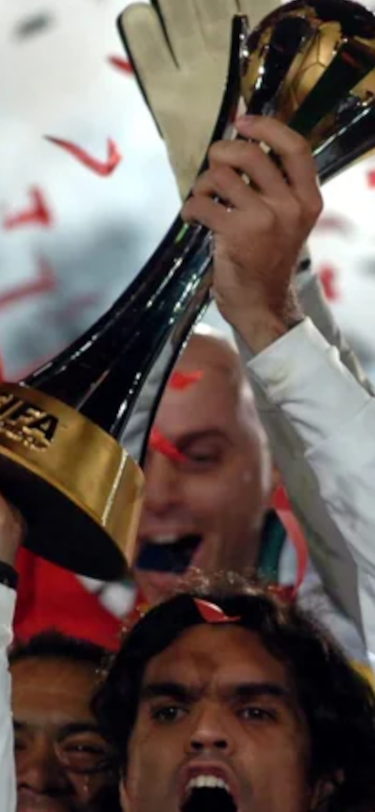
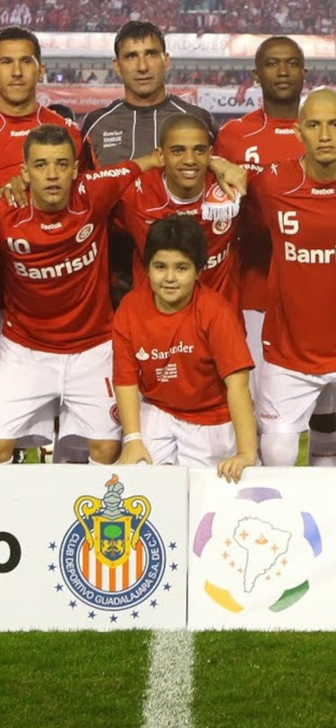
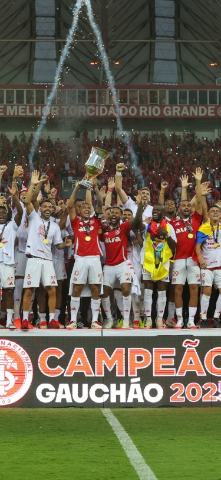
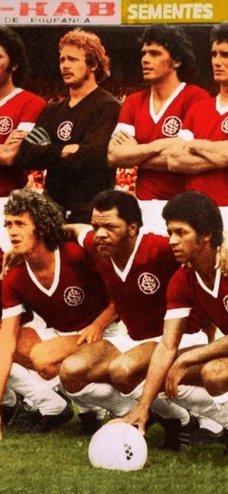
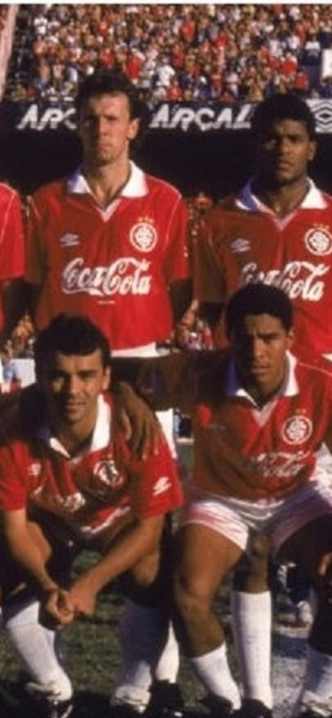

Mundial
O Sport Club Internacional é um clube de futebol brasileiro que conquistou o Mundial de Clubes da FIFA em 2006, derrotando o Barcelona por 1 a 0. Essa foi a primeira vez que o Internacional conquistou o título mundial. A partida foi disputada em Yokohama, no Japão, e o gol da vitória foi marcado por Gabiru.

Libertadores
O Sport Club Internacional possui dois títulos da Copa Libertadores da América, erguendo a cobiçada taça em 2006 e 2010. Essas conquistas solidificaram o clube gaúcho como um dos gigantes do futebol sul-americano.Esses dois títulos são marcos indeléveis na história do Internacional, celebrando a garra e a tradição do clube no cenário internacional.

Gauchão
O Internacional é o clube com mais títulos no Campeonato Gaúcho, ostentando a impressionante marca de 46 conquistas estaduais. Essa hegemonia reflete uma trajetória de domínio e consistência no futebol do Rio Grande do Sul ao longo de décadas.

Brasileiro
O Internacional se orgulha de ter conquistado três títulos do Campeonato Brasileiro, todos eles em uma era de ouro para o clube. A conquistas foram nos anos de 1975, 1976 e 1979. Esses três títulos representam um período de glória inigualável para o Sport Club Internacional no cenário nacional.

Copa do Brasil
Apesar de ser um clube com grande tradição e uma vasta galeria de troféus, a Copa do Brasil é um título que ainda falta na prateleira do Sport Club Internacional. O clube e sua torcida seguem na busca por essa conquista inédita.